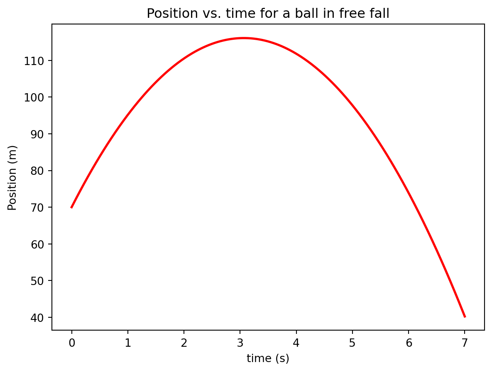

Most will be familiar with the kinematic equations of motion, which can be used in situations involving constant acceleration. The kinematic equations are. \[v_f = v_i + a \Delta t\]\[x_f = x_i + v_i \Delta t + {1\over 2} a \Delta t^2\]
As an example, consider a car that is initially at rest, waiting for the stoplight to turn green. Once the light turns green, the driver presses on the accelerator and the car’s speed begins to increase. After accelerating at a rate of \(a = 5\) m/s\(^2\) for \(t = 3\) s, the driver eases up and reduces the acceleration to more modest \(a = 2\) m/s\(^2\) and maintains this acceleration for another \(\Delta t = 8\) s. How would you determine the speed of the car and its location after the full \(11\) seconds had elapsed? The kinematic equations above could be applied to the first 3 seconds of the trip or the last 8 seconds of the trip, but couldn’t be applied from the start to the end. Let’s use the kinematic equations to determine the speed and position after the first 3 seconds. \[ v_1 = v_0 + a_0 \Delta t\]\[ = (0 ~\text{m/s}) + (5 ~\text{m/s}^2) (3 ~\text{s})\]\[ = 15 ~\text{m/s}\]\[x_1 = x_0 + v_0 \Delta t + {1\over 2} a_0 \Delta t^2\]\[ = (0 ~\text{m}) + (0 ~\text{m/s}) (3 ~\text{s}) + {1\over 2}(5 ~\text{m/s}^2) (3 ~\text{s})^2\]\[ = 22.5 ~\text{m}\] Now that we have the speed and velocity at \(t = 3\) we can proceed to use the same kinematic equations for the second part of the motion. \[ v_2 = v_1 + a_1 \Delta t\]\[ = (15 ~\text{m/s}) + (2 ~\text{m/s}^2) (8 ~\text{s})\]\[ = 31 ~\text{m/s}\]\[x_2 = x_1 + v_1 \Delta t + {1\over 2} a_1 \Delta t^2\]\[ = (22.5 ~\text{m}) + (15 ~\text{m/s}) (8 ~\text{s}) + {1\over 2}(2 ~\text{m/s}^2) (8 ~\text{s})^2\]\[ = 206.5 ~\text{m}\] Since the kinematic equations only apply to constant-acceleration motion, the problem had to be divided into two parts: one for each constant-acceleration portion of the motion.
Now, what if the motion involved 5 different segments, each with a different acceleration, with the acceleration starting at 4 m/s\(^2\) and decreasing by \(1\) m/s\(^2\) every second.
time(s)
acceleration (m/s\(^2\))
0
4
1
3
2
2
3
1
We could repeat the process from above to generate the positions and velocities at these four times.
The \(x_{n+1}\) and \(x_n\) is standard notation to mean the next x (\(x_{n+1}\)) and the current x (\(x_n\))
This process could be extended for as long as you wanted but I hope you can see that you don’t want to do this by hand for very long.
Euler’s Method
Euler’s method works in exactly the same as above with one small change; when using the kinematic equations, we use a time step (\(\Delta t\)) that is very small. We do this because if the time step is very small, the acceleration can be treated as if it were constant even if it changes dramatically over longer time intervals. Most realistic scenarios involve accelerations that change continuously, which means that it is constantly changing. The steps to implement Euler’s method have the following basic steps:
Define the initial conditions. For particle motion this involves defining the initial position and velocity of the object as well as any other variable that do not change over time.
Repeatedly calculate the following quantities.
The current acceleration. The acceleration function is typically given to you or can be derived from Newton’s law. This expression will always be a function of time,position, and/or velocity and must be re-evaluated every time you advance by a time step.
Use a kinematic equation to calculate the next position using the previous position and velocity.
Use a kinematic equation to calculate the next velocity using the previous position and velocity.
If you want to store all of your positions and velocities for later use, add them to a list.
An example implementation of Euler’s method for a particle (experiencing no air resistance) dropped thrown upward (with $v = 30 $ m/s) from an initial height of \(y_i = 70\) m, is shown below.
# Import statementsimport numpy as np import matplotlib.pyplot as pltv0 =30.0# Initial velocity in m/sy0 =70# Initial height in mdelta_t =0.01# Time step in seconds (should be small)t0 =0# Start time in seconds# Make lists to store your positions, velocities and times.y = [y0]v = [v0]t = [t0]while y[-1] >0: a =-9.8# Calculate the current acceleration# Calculate the next position and velocity nextV = v[-1] + a * delta_t nextY = y[-1] + v[-1] * delta_t nextT = t[-1] + delta_t# Store the new position and velocity in the lists y.append(nextY) v.append(nextV) t.append(nextT)plt.plot(t,y,linewidth =2, color ='red')plt.xlabel("time (s)")plt.ylabel("Position (m)")plt.title("Position vs. time for a ball in free fall")
Text(0.5, 1.0, 'Position vs. time for a ball in free fall')

Air Drag
This week we will be using Euler’s method to predict the fall time for an object experiencing a non-negligible amount of drag. The drag force acting on a falling object is given by:
\[F_D = {1\over 2} \; C \rho A v^2 \;\;\;\;\;(1) \]
where \(C\) is the drag coefficeint and has the following values: 0.5 for a sphere and 0.3 for a cone.
\(\rho\) is the air density and has a value of 1.02 kg/m\(^3\) in Rexburg
A is the cross-sectional area
v is the velocity of the object
Applying Newton’s second law to the free-body diagram shown above gives:
Solving for the acceleration in the y-direction gives:
\[ a_y = {d v_y \over dt} = \frac{ C \rho A v^{2}}{2m} - g \;\;\;\;\;(3)\]
Notice that this expression for the acceleration is not constant; it changes as \(v\) changes. The kinematic equations can be used to update the position and velocity \[ y_{n+1} = y_{n} + v_{n} \cdot \Delta t \;\;\;\;\;(5)\]
\[ v_{n+1} = v_{n} + a_{n} \cdot \Delta t \;\;\;\;\;(6)\]
\[ = v_{n} + ({C \rho A v^2 \over 2 m} - g) \cdot \Delta t \;\;\;\;\;(6)\]
Activity I: Minimum Fall Time
Goal (Overview)
Using kinematics, calculate the time it takes for a particle to fall, starting from rest, through a distance of \(6\) meters, neglecting air drag. This number will serve as a point of comparison when we include air drag in our analysis.
Procedure
The kinematic equations are given below. \[y_f = y_i + v_i \Delta t + {1\over 2}a \Delta t^2\]\[v_f = v_i + a \Delta t\]\[v_f^2 = v_i^2 + 2 a \Delta x\] Use these equations to calculate the time it takes for a particle to fall through a distance of \(6.0\) meters starting from rest. Neglect air resistance. Show your math and calculations below.
Include kinematic details here
# Code to perform calculations here
Activity II: Modeling the motion using Euler’s method
Goal (Overview)
Write some python code that will accurately predict the fall time for a projectile that is experiencing air resistance.
Procedure
Together in class we constructed a model for a particle that is thrown upward and experiences no air resistance. Use equations 3-6 above to modify that code to include air resistance. Set $= 1.02 $ kg/m\(^3\), \(C = 0.5\) and make reasonable guesses for the values of \(A\) and \(m\). We’ll fine tune these values later.
Modify the code to model a particle that is dropped from rest rather than thrown upward initially.
Your value for \(\Delta t\) will need to be reasonably small to get accurate results. Decrease your value of \(\Delta t\) until the results stop changing.
As a test of the correctness of your code, increase the initial height of the projectile and verify that the drop time changes as you would expect.
As a test of the correctness of your code, increase the mass of the projectile and verify that the drop time changes as you would expect.
As a test of the correctness of your code, decrease the drag constant of the projectile and verify that the drop time changes as you would expect.
# Import from librariesfrom numpy import pi# Define constants# Set initial conditions# Loop to calculate flight time using Euler's methodwhile y >0:
Activity III: Predicting times
Procedure
Make mass and diameter measurements on each of the objects given to you.
Then use the code you wrote above to predict the drop times for each of the six objects dropped from a height of 16.92 m.
Fill in the table below with your predictions.
After the table is filled out, run some tests in the lab room to verify the accuracy of your model.
Object
Precited fall time (s)
Ping Pong Ball
Styrofoam cone
Styrofoam sphere (small)
Styrofoam sphere (medium)
Beach ball
Activity IV: Comparison of Predicted and Measured Times
Each group will measure the time of flight for the five objects. Average the time measurements for each object and compare to your predicted values.